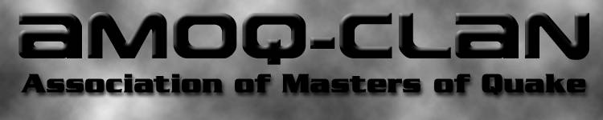
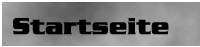
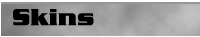
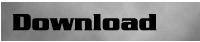
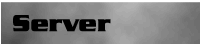
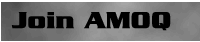
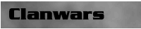
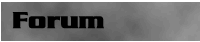
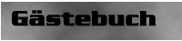

Intern
Wir haben ne Menge Level Editing Talente in unserem Clan, hier sind die Maps von ihnen...
Q2 Maps
| The Lost Station (ACDM1) | by Hell Soldier |
 Der Level ist von HellSoldier unserem ClanLeader, wie die meisten der acdm-Reihe. Diese map ist für 4 -10 Player geeignet, sie ist recht
groß und die Texturen und Lichter sind gut platziert und sehen gut aus. Falls ihr irgend welche Fehler seht, dann liegt es meistens an dem
Leveleditor, da QuArK beim Konvertieren eigenwillige Veränderungen vor nimmt, die man nicht mehr korrigieren kann. Die Texturen sind alle
bekannt. Es gibt zwar keine Secrets aber dafür coole Sounds.
Der Level ist von HellSoldier unserem ClanLeader, wie die meisten der acdm-Reihe. Diese map ist für 4 -10 Player geeignet, sie ist recht
groß und die Texturen und Lichter sind gut platziert und sehen gut aus. Falls ihr irgend welche Fehler seht, dann liegt es meistens an dem
Leveleditor, da QuArK beim Konvertieren eigenwillige Veränderungen vor nimmt, die man nicht mehr korrigieren kann. Die Texturen sind alle
bekannt. Es gibt zwar keine Secrets aber dafür coole Sounds.Blackdog |
|
| Lava Dome (ACDM2) | by Hell Soldier |
 Acdm2 wurde für ca. 4-6 Player gemacht. Die map sieht ziemlich gut aus, und hat speziel in Lithium einen super Funfaktor! Wie bei acdm1 hat
QuArK hier auch beim Konvertieren einige Veränderungen vorgenommen. Es gibt hier eigentlich nur ein halbes Secret, und das ist nur unter
Lithium mit dem Hook zu erreichen. Die Texturen sind die standart Q2-Texturen. Es gibt auch nock keine Sounds, was dem Level aber nicht
schadet. Ein Manko ist, dass die Decke etwas niedrig hängt. Die map ist auch von HellSoldier.
Acdm2 wurde für ca. 4-6 Player gemacht. Die map sieht ziemlich gut aus, und hat speziel in Lithium einen super Funfaktor! Wie bei acdm1 hat
QuArK hier auch beim Konvertieren einige Veränderungen vorgenommen. Es gibt hier eigentlich nur ein halbes Secret, und das ist nur unter
Lithium mit dem Hook zu erreichen. Die Texturen sind die standart Q2-Texturen. Es gibt auch nock keine Sounds, was dem Level aber nicht
schadet. Ein Manko ist, dass die Decke etwas niedrig hängt. Die map ist auch von HellSoldier.Blackdog |
|
| The Wasted Lands (ACDM3) | by Hell Soldier |
 Beim Bau von acdm3 habe ich viel dazu gelernt. Wie man verhindert, dass die Spieler an den Lampen hängenbleiben und vieles mehr. Acdm3 war
ursprünglich für Battleground gedacht, aber im nachhinein ist es für Deathmatch doch mehr geeignet. Das ist auch der erste Level wo QuArK
5.7 beim compilen nichts verändert hat. Hat vieleicht auch an meinem Windoof gelegen. :) Nach der neuinstallation lief Vieles besser. Der
Lever ist schöner als acdm1 und acdm2 und ein bisschen ausgereifter. Natürlich gibt es wieder Sounds und so weiter.
Beim Bau von acdm3 habe ich viel dazu gelernt. Wie man verhindert, dass die Spieler an den Lampen hängenbleiben und vieles mehr. Acdm3 war
ursprünglich für Battleground gedacht, aber im nachhinein ist es für Deathmatch doch mehr geeignet. Das ist auch der erste Level wo QuArK
5.7 beim compilen nichts verändert hat. Hat vieleicht auch an meinem Windoof gelegen. :) Nach der neuinstallation lief Vieles besser. Der
Lever ist schöner als acdm1 und acdm2 und ein bisschen ausgereifter. Natürlich gibt es wieder Sounds und so weiter.Hell Soldier |
|
| BlackDogs Railroom (ACDM4) | by Blackdog |
 Acdm4 wurde für höchstens 6 Player gemacht. Die map sieht ganz ok aus, dafür dass ich Anfänger bin (ist ja auch klein).
Es gibt nicht viel verschiedene Waffen ;), aber das macht nisch. Es sind keine Secrets versteckt und die Texturen stammen alle aus
dem standart baseq2 Repertoire. Sounds gibt's keine.
Der Spaßfaktor ist in hoch in Deathmatch - 4 oder 5 Ruler.
Acdm4 wurde für höchstens 6 Player gemacht. Die map sieht ganz ok aus, dafür dass ich Anfänger bin (ist ja auch klein).
Es gibt nicht viel verschiedene Waffen ;), aber das macht nisch. Es sind keine Secrets versteckt und die Texturen stammen alle aus
dem standart baseq2 Repertoire. Sounds gibt's keine.
Der Spaßfaktor ist in hoch in Deathmatch - 4 oder 5 Ruler.
Blackdog | |
| Hall of Rockets | by Painstorm |
 Hall
of Rockets:
In dieser Map gibt es ausschliessleich RocketLaunchers. Sie ist zum Zeitvertreib wenn
mal Bock auf metzeln hat *G*. Viel Spaß. Painstorm Hall
of Rockets:
In dieser Map gibt es ausschliessleich RocketLaunchers. Sie ist zum Zeitvertreib wenn
mal Bock auf metzeln hat *G*. Viel Spaß. Painstorm
|
|
Q3 Maps
| Slaughter House | by Anthrax |
 Slaughter House was originaly only thought as a small map so that I could lern to use the editor but I had so much fun playing the map that I
decided finish it.
Slaughter House was originaly only thought as a small map so that I could lern to use the editor but I had so much fun playing the map that I
decided finish it.
|
|
| ULTRA Cool | by Anthrax |
 This is one of the Coolest 1v1 maps, its a domination map this
means that the person
who leads at the begining is most lightly to win. This is my first map so have pitty. This is one of the Coolest 1v1 maps, its a domination map this
means that the person
who leads at the begining is most lightly to win. This is my first map so have pitty.
|
|
| Pain's Room | by Painstorm |
 Q3acdm3 by Painstorm. PAIN`s Room: Es gab mal eine quadratische Version von dieser MAP. Ich habe sie nun rund
gemacht. Es ist auch eine kleine Metztel Arena wie ihr sie ja von mir kennt (acdm5). Sie macht besonders mit
so 5-6 Leuten Spaß. Viel Spaß beim Zocken dieser MAP. Painstorm
Q3acdm3 by Painstorm. PAIN`s Room: Es gab mal eine quadratische Version von dieser MAP. Ich habe sie nun rund
gemacht. Es ist auch eine kleine Metztel Arena wie ihr sie ja von mir kennt (acdm5). Sie macht besonders mit
so 5-6 Leuten Spaß. Viel Spaß beim Zocken dieser MAP. Painstorm
|
|
| The Bunker | by Anthrax |
 This is the coolest map I ever built it dosen't just look good
it also has a great gameplay because there isn't a Quad :).
It's a map for 2-4 players but also a good 1v1 map.
This is the coolest map I ever built it dosen't just look good
it also has a great gameplay because there isn't a Quad :).
It's a map for 2-4 players but also a good 1v1 map.
|
|
| JumpingZone | by Painstorm |
 Das
ist das erste
Space-Level von mir und auch das erste in das ich Sounds eingebaut habe. Was soll
ich noch sagen? Habt einfach Spaß mit dem Level! Das
ist das erste
Space-Level von mir und auch das erste in das ich Sounds eingebaut habe. Was soll
ich noch sagen? Habt einfach Spaß mit dem Level!
|
|